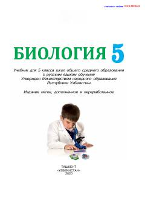

Б55-sinf o'quvchilari uchun mo'ljallangan biologiya fani bo'yicha darslik.
Ushbu darslik umumiy o'rta ta'lim maktablarining 5-sinfi uchun mo'ljallangan bo'lib, tirik tabiat, biologiya fanining asosiy bo'limlari va O'zbekiston olimlarining bu sohaga qo'shgan hissasi haqida ma'lumot beradi. Kitobda o'simliklar, hayvonlar, mikroorganizmlar hamda ekologiya asoslari sodda va tushunarli tarzda bayon etilgan.